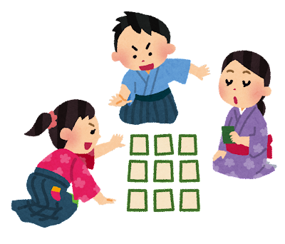

百人一首 ランダム or 連続再生
今年の百人一首をすべて、自動で読み上げます。順番どおり連続再生も、シャッフルしてランダム再生も可能です。
岩渕大生
------------------------------------------

歌：
序歌. 難波津に咲くやこの花冬ごもり 今を春べと咲くやこの花（ 王仁 ）
上の句：
なにはづに さくやこのはな ふゆごもり
下の句：
いまははるべと さくやこのはな
百人一首 ランダム or 連続再生
今年の百人一首をすべて、自動で読み上げます。序歌. 難波津に咲くやこの花冬ごもり 今を春べと咲くやこの花（ 王仁 ）
なにはづに さくやこのはな ふゆごもり
いまははるべと さくやこのはな